AML RADAR 0.5.0 · SVG 보존 열람
이 HTML은 2026-10-26에 기존 SVG 14개를 열람하기 위해 생성한 보존용 문서입니다. 당시 작성한 원본 HTML이나 새 디자인이 아닙니다. 원본 SVG를 그대로 불러옵니다.
버전 기록·출처·검증
01-dashboard_0.5.0.svg
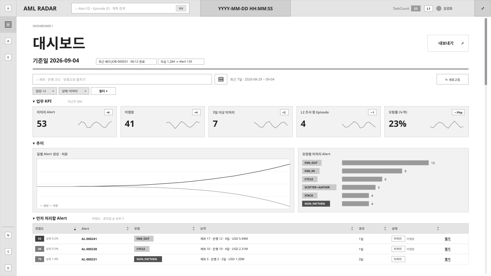
02-alerts-filter-open_0.5.0.svg
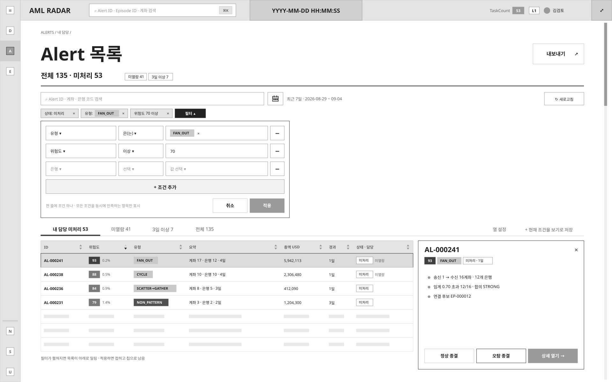
03-episodes-date-picker-open_0.5.0.svg
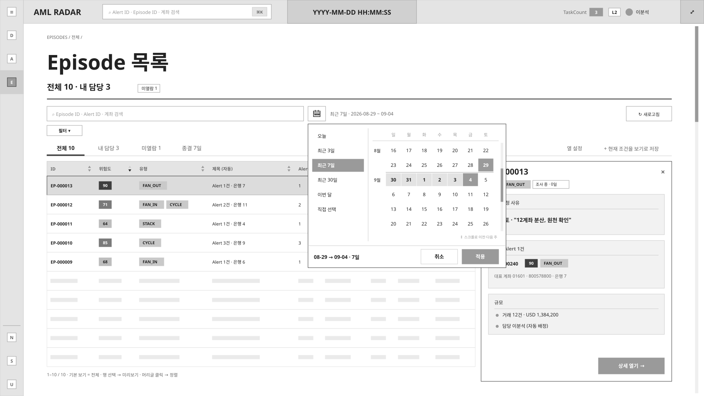
04-alert-detail-overview_0.5.0.svg
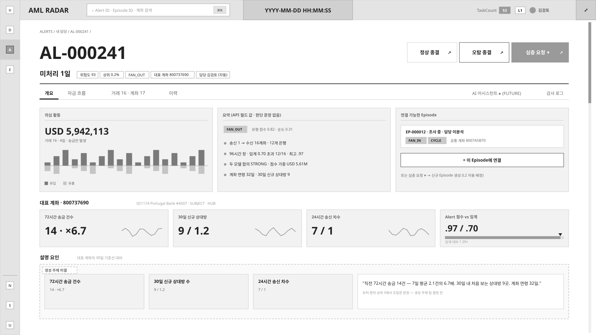
05-alert-detail-flow-sankey_0.5.0.svg
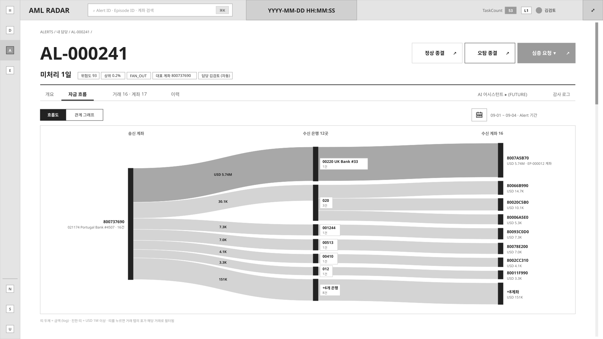
06-alert-detail-flow-graph_0.5.0.svg
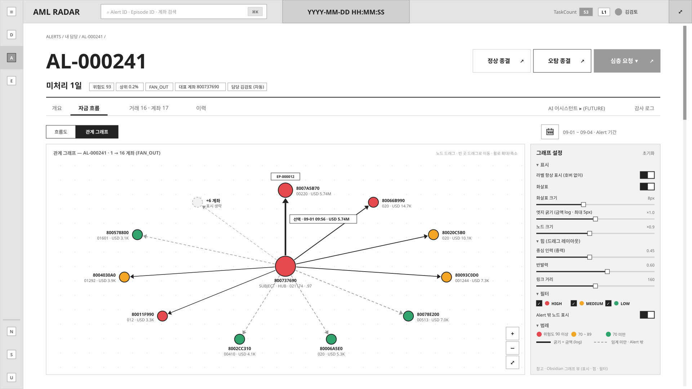
07-alert-detail-transactions_0.5.0.svg
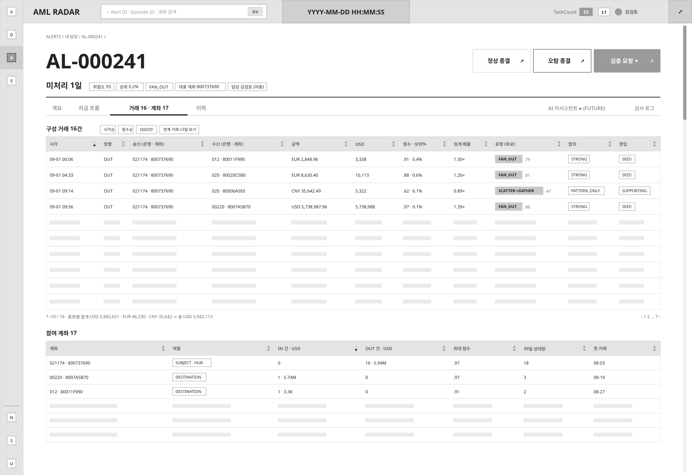
08-alert-detail-history_0.5.0.svg
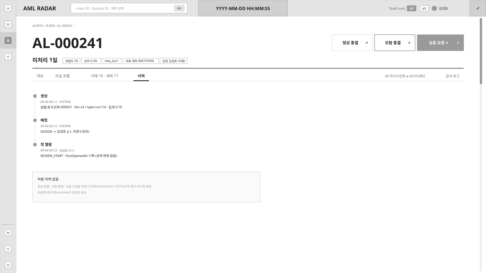
09-episode-detail-overview_0.5.0.svg
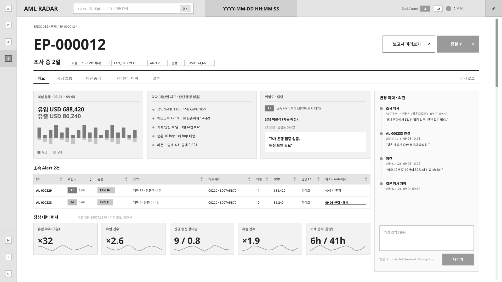
10-episode-detail-flow-sankey_0.5.0.svg
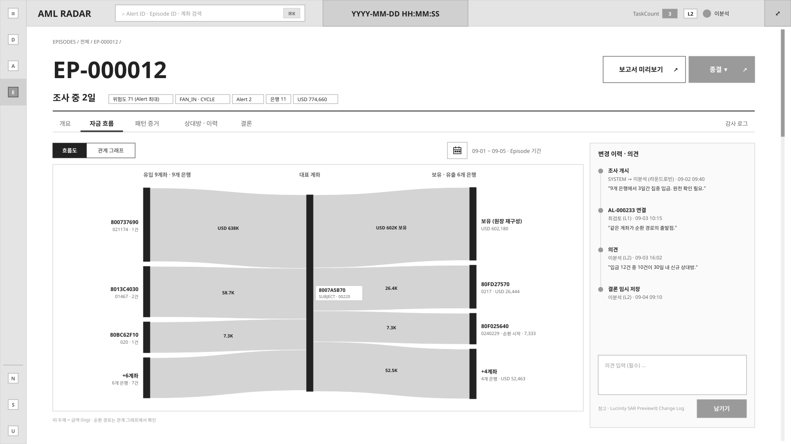
11-episode-detail-flow-graph_0.5.0.svg
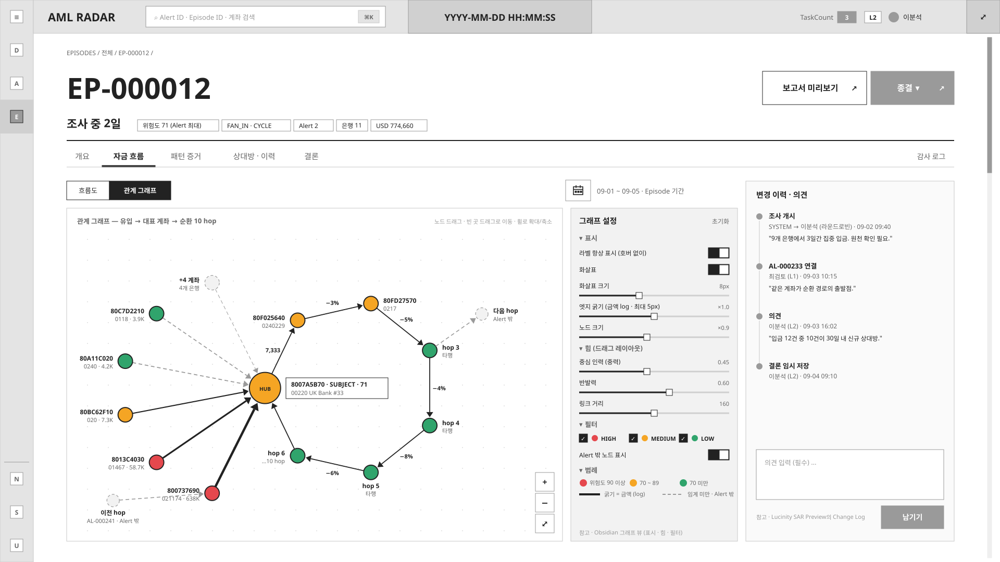
12-episode-detail-patterns_0.5.0.svg
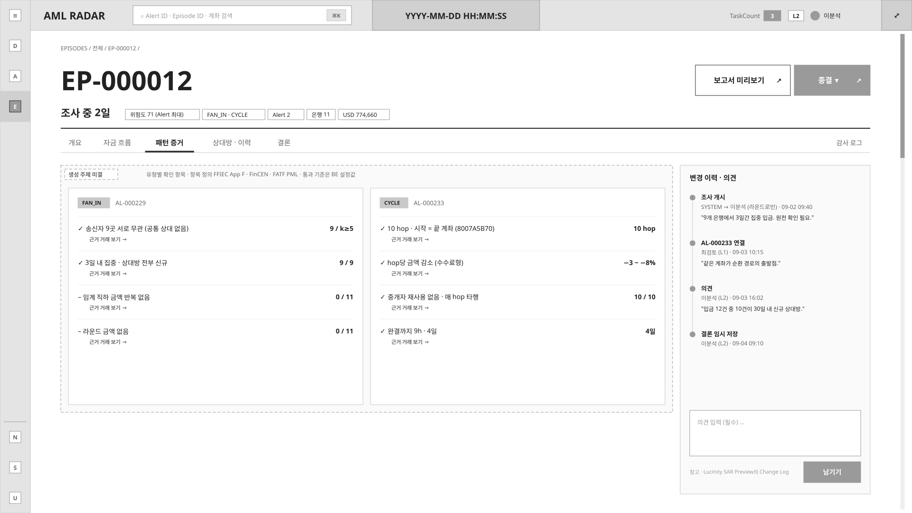
13-episode-detail-parties-history_0.5.0.svg
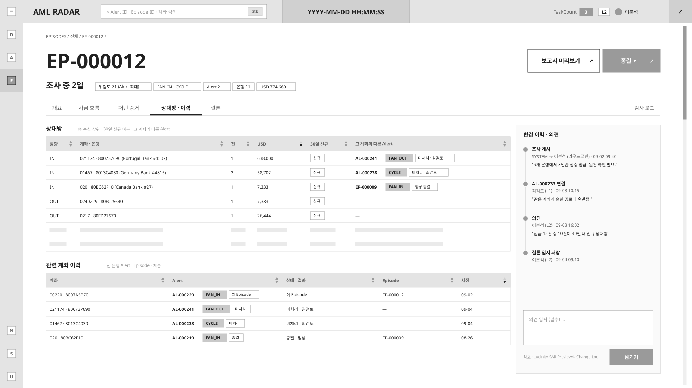
14-episode-detail-conclusion_0.5.0.svg
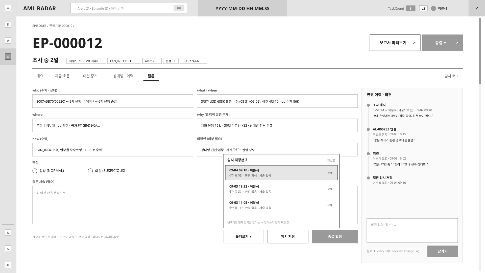